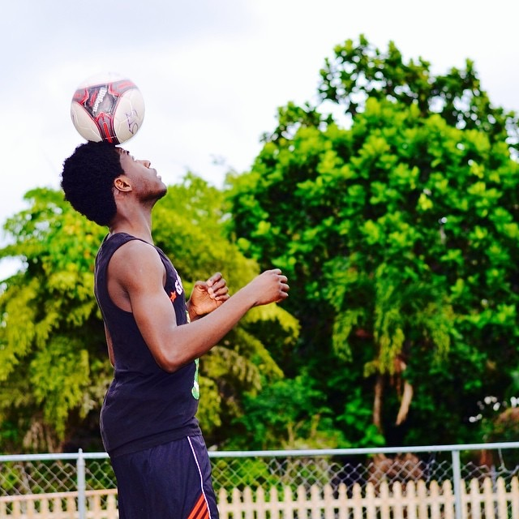
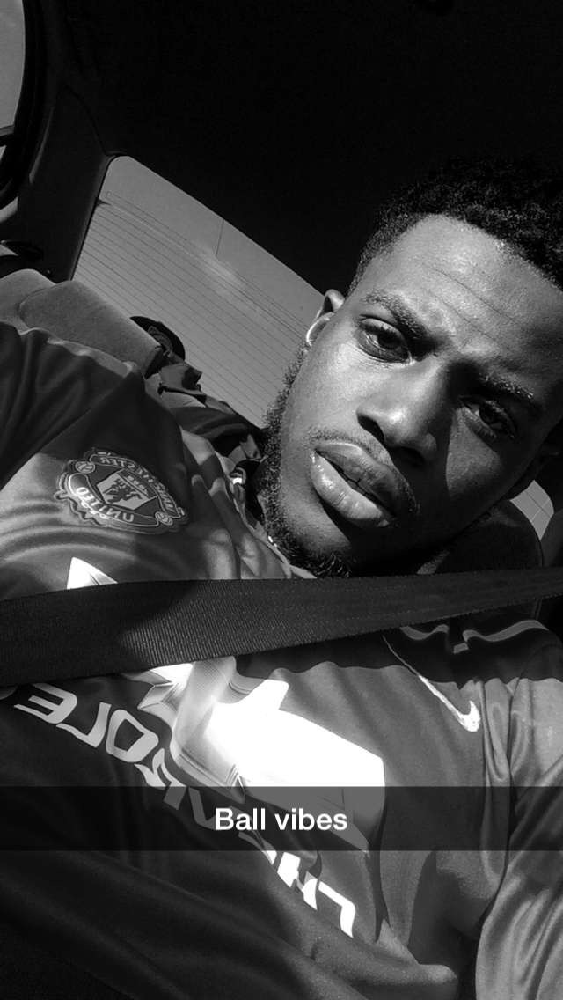
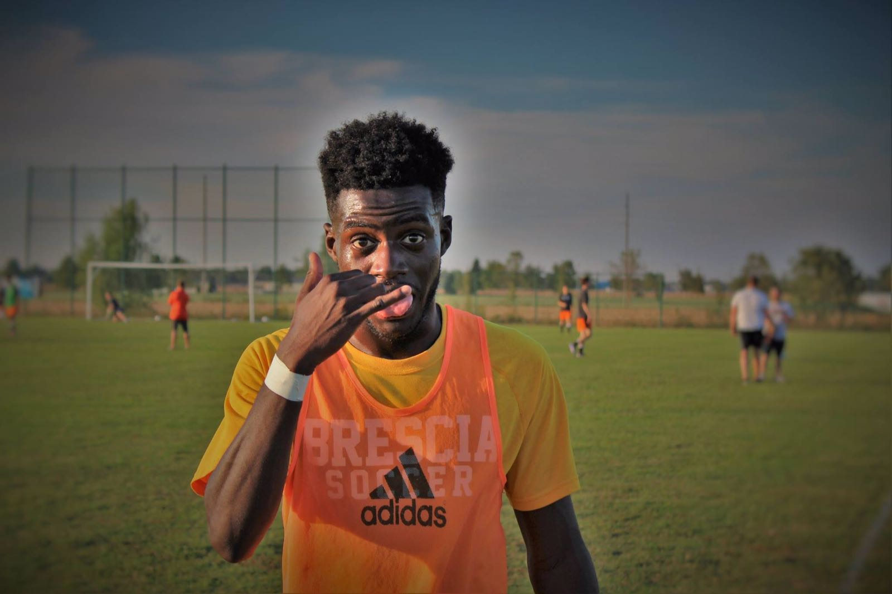
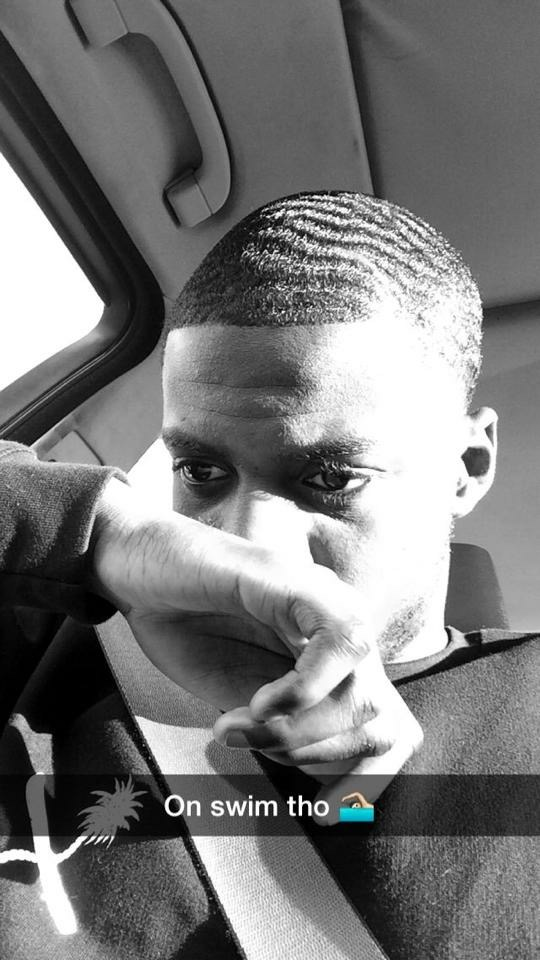

My name is Jean Gilbert Laurent. I am from Haiti. I am in my first semester of sophomore year in Computer Science at Brescia University. In this memo, I am going to tell you little bit about my background, interests, my goals. I was born in a small village called saint marc. Port au Prince is located about 70 kilometers south of the city of Port Au Prince which is largest city in the country and the capital. I spent my first 16 years of life in Port Au Prince. Port au Prince is famous for beaches and soccer. 
I spend my first 16 year of life in Haiti before moving to South Florida, on August, 2010 with my family. I started going to Coral Glades High school as a Junior and was enrolled in ESL program for a year. I focused on achieving my goals including learning English language, participating in other activities, and doing well in all my classes.  In my Senior year, I had joined Math club, Robotics club and also enrolled in few honor classes. Along with school, I also found a part time job at a local restaurant to help my parents financially. Moving in to a new country and settling there (here) was a huge challenge for me and my family.
My everyday activities included going to school, playing soccer, watching television, and church at the night time. My goal in life is to graduate college and play professional soccer. Since I was kid, I always picture myself playing soccer at the highest love.  School always comes first for my parents, but soccer always been my first love. Whenever I think about what my future is going to be like, and what I want to be when I grow up, all I can think about is being a professional soccer player. I grew up playing soccer at the age of five, and have not stopped playing soccer ever since, I grew up loving the game of soccer. My parents are my motivation to reaching my goal, because they have always been there for me since the day I was born. They have raised me, fed me, bought most of my things, provided shelter for me, and they also have supported me in everything I have done.  They have also supported me and playing soccer, and they support me when I tell them that becoming a professional soccer player is what I want to do. I would like to repay my parents someday for everything they have done for me, I would like to someday buy them a house and I would like to someday be able to tell them that they will no longer have to work anymore because I would see them come home tired from work every single day from a job that does not even pay that much. I just want to reach my dream and make my people proud.
Other useful links...


Brescia

Owensboro

Telephone